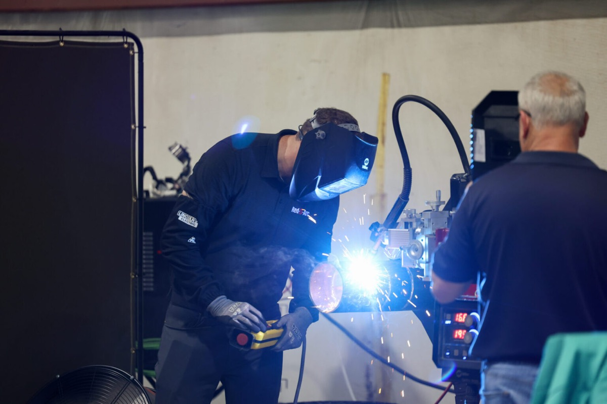
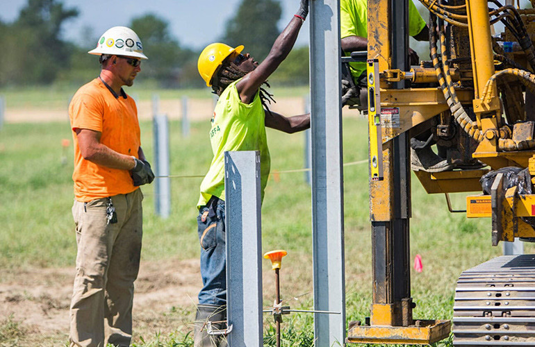

Built to Stay · A supplier and workforce readiness partnership for Entergy’s two new plants in Jefferson County
The Follow-Through on Arkansans Building Arkansas.
Getting Jefferson County firms, kitchens and workers from the vendor fair to a contract, and still working when the build is done.
For: Entergy Arkansas economic development and supplier engagementDiscussion draft · November 2026Read the Delta Futurism story →
01
Entergy Has Committed to Local First.
Entergy is building two plants in Jefferson County at the same time. For Arkansas Cypress, it told the Arkansas Public Service Commission it will work with its contractor “to use local contractors and suppliers when possible.” For Jefferson Power Station, it says it will source workers and vendors locally where practicable. Its own line is Arkansans building Arkansas. The question is how many Jefferson County firms and workers are ready when the packages open.
$3.1Bacross two plants: Arkansas Cypress ($1.6 billion; 600 MW of solar and a 350 MW battery; in service December 2028) and Jefferson Power Station (about $1.5 billion; a 754 MW gas plant at White Bluff, approved January 2026; construction started mid-2026; opening by 2030)
700–800workers on site at the peak of each build, by Entergy; about 35 permanent jobs across the two plants after (10–15 at Cypress, about 22 at Jefferson)
$174Min taxes Entergy expects beyond property tax: $46 million in state sales and use tax building Cypress, and about $128 million in local, county and sales taxes from Jefferson Power Station
$9.6Min property taxes expected in Cypress’s first year of operation alone
Arkansas Cypress: Entergy’s testimony as summarized in APSC Order No. 4, Docket 25-054-U (March 2026), and the Commission’s 2026 Generating Arkansas Jobs Act report. Jefferson Power Station: APSC approval in Docket 25-047-U (January 28, 2026) and Entergy Arkansas’s project page.
100food-service and drinking establishments with paid staff in Jefferson County
64construction establishments, mostly small specialty trades; 4 in heavy and civil work
16trucking establishments; most have fewer than five employees
18.6%of residents in poverty, against 12.5% nationally; about 30% fewer people than in 1980
Census County Business Patterns 2023; American Community Survey 2020–2024, table B17001; 1980 census and 2025 population estimate.
Two builds at once, in a county of small firms, and nobody publishes how much of either stays in the county.
02
From the Vendor Fair to a Contract.
In March 2026, Entergy held vendor fairs in Pine Bluff to meet local firms that could work on its two new plants in the county, Arkansas Cypress and Jefferson Power Station. Almost 340 company representatives came. From there, a small county firm has five steps to clear before it wins a contract. The pieces exist. What nobody owns is the follow-through between them, which is where small firms stall.
1
Register
Where firms stall
Never finish the supplier registration after the vendor fair.
In place today
Entergy’s supplier registration, open to Arkansas firms.
Built to Stay adds
A workshop where firms register together, in the room.
2
Prequalify
Where firms stall
Insurance minimums, safety records, and the Avetta safety prequalification for on-site work.
In place today
The requirements, set by Entergy and its contractors.
Built to Stay adds
A readiness record for each firm: what’s missing, the fix, the date.

3
Find the package
Where firms stall
Don’t know what work is open, or when.
In place today
Packages issued by the two builds’ contractors and their subcontractors.
Built to Stay adds
A ready list matched to packages, and notice the day one opens.

4
Bid
Where firms stall
A first bid to a contractor this size.
In place today
Each contractor’s own process. The contractor decides.
Built to Stay adds
Help assembling the bid. No say in the decision.
5
Build a record
Where firms stall
One job, then nothing to show the next buyer.
In place today
Prime contractors report local spend quarterly under Entergy’s Second-Tier program.
Built to Stay adds
A monthly count of firms registered, prequalified, bidding and awarded.
Selling a single catering job is one thing. Knowing how to clear a procurement process and become a vendor is what leaves a business stronger for the next plant.
03
Five Workstreams. See How Each One Runs.
Each one runs through the same steps: get ready, get matched, get counted. Pick one to walk through an example of how it runs, then size it yourself.
Pick a workstream
One workshop to start. Thirty minutes every two weeks. The county is ready before the package opens.
Crew Meals
Not a food truck at the gate. A program that brings fresh, simple meals to crews where they work, so nobody drives off site at midday, and lets the county’s own kitchens supply it.
Built to Stay · Crew MealsIllustrative example
Kitchen roster · BTS-M01Prepared by Delta Futurism
County kitchens on the program
Kitchen
Cooks
Health permit
Insurance
Status
Kitchen A
Soul food
Yes
Yes
Ready
Kitchen B
Barbecue, catering
Yes
Adding
Week 2
Kitchen C
Bakery, breakfast
Yes
Yes
Ready
Kitchen D
Sides, salads
Applying
Yes
Week 3
4 kitchens checked
Example
Order sheet · WednesdayPrepared by Delta Futurism
Meals by yard, locked at 9 a.m.
Yard
Crew
Meals
Window
North laydown yard
Civil crew
140
11:30
Battery yard
Electrical
85
12:00
East array blocks
Racking
120
12:30
Locked at 9 a.m.
Example
Delivery run · WednesdayPrepared by Delta Futurism
From the kitchen to the crews, on schedule
10:45 County kitchens drop food at the central kitchen.
11:15 First run leaves for the north yard.
11:30–12:00 Crews eat in the shaded tent at their yard.
12:00 Back to work. Nobody left the site.
On site by noon
Example
Pay run · week 6Prepared by Delta Futurism
County kitchens paid in seven days
Kitchen
Meals cooked
Paid
Kitchen A
610
$4,270
Kitchen C
390
$2,730
Kitchen D
260
$1,820
Paid in 7 days
Example
Monthly count · month 3Reviewed by partners
What the program did this month
9,450meals served
4county kitchens paid
$33Kto county kitchens
96%of crews back on site after lunch
Partner-reviewed
Example figures
Step 1 of 5Example only. Names and numbers are made up.
Our staffing model: crew on site by month, both buildsOur design, phase by phase. Arkansas Cypress runs about 29 months; Jefferson Power Station about four years, as Entergy now says. The contractors’ schedules would replace it.
Size it yourself
Each slider is one assumption. Move it and the numbers change. “Without a program” is what typically happens on builds like this one.
Sized from our staffing model, not from what a contractor might allow. Lunch goes from one hub kitchen to the laydown yards at 11 a.m., with county kitchens cooking. It feeds both builds’ crews. At the combined peak, about 490 lunches a day, that is about four county kitchens, a hub and three drivers. The hub breaks even above about 320 workers on site, which holds from February 2027 to August 2029; outside that window one kitchen runs it with no hub. It is a thin business. The lasting value is kitchens with a permit, insurance and a contract record.
Energy Workforce
Training that starts with a committed job, so county residents are ready when the two builds’ contractors and their subcontractors hire.
Built to Stay · Energy WorkforceIllustrative example
Hiring plan · by tradePrepared by Delta Futurism
What the build hires, and when
Trade
Starts
Openings
Craft laborers
February
40
Equipment operators
March
12
Electrician helpers
May
25
From the contractors’ plans
Example
Cohort 1 · craft laborersPrepared by Delta Futurism
Training with a job at the end
Recruited
30 county residents
Training
OSHA-10, first aid, equipment basics, with Southeast Arkansas College
Rule
A placement is committed before training starts
Placement first
Example
Placements · cohort 1Prepared by Delta Futurism
Who started, and where
Resident
Trade
Employer
Start
Resident A
Laborer
Wanzek
Feb 3
Resident B
Laborer
Fencing subcontractor
Feb 10
Resident C
Operator trainee
Wanzek
Feb 17
18 placed
Example
Retention checkReviewed by partners
Still in the trade
100placed on the build
68%still in the trade
4moved to plant jobs
22hired for the next build
Counted at 12 months
Example figures
Step 1 of 4Example only. Names and numbers are made up.
Size it yourself
Each slider is one assumption. Move it and the numbers change. “Without a program” is what typically happens on builds like this one.
Pay is the Arkansas construction average ($31.07 an hour, 50-hour weeks). Without a program, local hire is about 12%, as on a comparable Wisconsin solar build. The 30% target fits the federal rule that apprentices do 15% of labor hours. Worker-months for both builds come from our staffing model in the crew meals tab, and Jefferson Power Station adds its 22 permanent jobs. Hiring channels include the contractors’ own portals, such as TIC’s craft careers site for Jefferson. The $12,000 gain compares construction pay with Pine Bluff’s average wage.
Local Suppliers
Getting county firms registered, prequalified and matched to packages on both builds, and positioned for the 30 years of upkeep after them.
Built to Stay · Arkansas CypressIllustrative example
Working brief · BTS-001Rev 2 · Prepared by Delta Futurism
Arkansas Cypress: what the build needs in the next 90 days
At the table
Entergy economic development and supplier engagement; both contractors’ procurement and site hiring; a training partner; one county business
Opening soon
Hauling and aggregate; erosion control and seeding; fencing; crew meals at the laydown yards; craft hires
Who decides
The contractors buy and hire. The working group picks pilots and can stop any of them.
Cadence
30 minutes every two weeks; a count every month
Corrected by partners
Example
Workshop notes · BTS-004Pine Bluff · Prepared by Delta Futurism
Getting on the list: supplier registration, safety and insurance
Trade
Firms
Registered in the room
Need help with
Food service
9
7
Liability limits, health permit
Hauling
6
5
Safety record, auto coverage
Site services
5
4
Avetta, written safety program
Professional
3
3
None
Agenda: how Entergy and its contractors buy; registration; safety prequalification; insurance; what’s opening.
23 firms attended
Example
Readiness record · Hauler BUpdated week 4 · Prepared by Delta Futurism
Hauler B: gravel and aggregate
Requirement
Status
Fix
By
Supplier registration
Done
—
—
General liability and auto
Meets
—
—
Safety record
Gap
Written safety program and plan filed
Week 6
Avetta prequalification
Started
Upload safety program
Week 7
References
2 similar jobs
—
—
Requirements shown are typical; the real list comes from Entergy and its contractors.
Closing the gap
Example
Ready list · Jefferson County4 of 23 shown · Prepared by Delta Futurism
Firms and residents ready before the packages open
Firm or cohort
Work
Registered
Avetta
Status
Kitchen A
Crew meals
Yes
n/a
Ready
Hauler B
Gravel, hauling
Yes
Started
Closing a gap
Fence Co. C
Perimeter fencing
Yes
Done
Ready
Craft cohort, 12
Laborers
n/a
n/a
OSHA-10 done
23 checked
Example
Package notice · BTS-017Sent the day it opened · Prepared by Delta Futurism
Perimeter fencing, Area 3 · bids due in 14 days
Fence Co. C · registered, Avetta done · 2 similar jobs
Fence Co. D · registered, Avetta done · bonded
Hauler B · can bid the gravel portion
Three county firms are ready to bid through your process. No recommendation and no guarantee: the choice is yours.
Sent day one
Example
Monthly count · month 6Reviewed by partners before release
What moved this month
31firms registered
19prequalified for on-site work
11bids submitted
4awards
Laid out to match the Second-Tier spend reports prime contractors already file with Entergy.
Partner-reviewed
Example figures
Handoff · end of 2028Prepared by Delta Futurism
What carries forward, and to whom
The ready list goes to Entergy’s supplier team for the next build in the region.
The workers who trained on the build move to the next crew, and some to the plant’s permanent jobs.
The kitchens and haulers keep a record that wins their next contract.
The method is written down for other Delta counties hosting new infrastructure.
Handed over
Example
Step 1 of 7Example only. Firm names and numbers are made up; the real requirements come from Entergy and its contractors.
Size it yourself
Each slider is one assumption. Move it and the numbers change. “Without a program” is what typically happens on builds like this one.
Site work and purchases are about 5% of each build: grading, aggregate, concrete, trucking, fuel, rentals, fencing, security and sanitation, on $1.6 billion for Cypress and about $1.5 billion for Jefferson Power Station. Upkeep counts Cypress only; a gas plant’s upkeep is mostly done by its own staff. The county has 4 heavy-civil and 16 trucking firms. Upkeep covers about 2,750 acres at NREL’s vegetation cost, plus fences, roads, drainage and security. The contractors’ package lists would replace these.
Landowner Prosperity
Lease income arrives for 30 years. A plan keeps it working for the family: wills and trusts, clear title on heirs property, and taxes handled.
Built to Stay · Landowner ProsperityIllustrative example
Session notes · familiesPrepared by Delta Futurism
What a lease means for a family
Who
Landowning families on the project, invited, not required
Topics
Taxes on lease income, heirs property and clear title, wills and trusts
Who leads
An independent attorney and CPA, not us
Voluntary
Example
Planning checklist · familyPrepared by Delta Futurism
One family’s plan, step by step
Title checked; heirs property cleared
Will or trust drafted
Tax plan for the lease income
A family meeting on what the land should do next
The family decides
Example
Program countSelf-reported
What families did
25families attended
14plans written
6titles cleared
0decisions made for them
Self-reported
Example figures
Step 1 of 3Example only. Names and numbers are made up.
Size it yourself
Each slider is one assumption. Move it and the numbers change. “Without a program” is what typically happens on builds like this one.
We count plans written, never lease income. Advisers are independent attorneys and CPAs.
Community Resilience
The plant keeps the grid supplied. A few backup systems keep the places people go in an outage open.
Built to Stay · Community ResilienceIllustrative example
Facility map · Jefferson CountyPrepared by Delta Futurism
Where people go when the power is out
Facility
Role in an outage
Backup power
Clinic A
Care, medicine cold storage
None
Church B
Shelter, meals
Old generator
Senior center C
Cooling, charging
None
14 mapped
Example
Scope · Clinic APrepared by Delta Futurism
What it takes to stay open
Need
About 30 kW for 24 hours
Options
A standby generator, or solar with a battery
Cost
About $50,000 to $153,000
Path
Grants and the federal tax credit for solar and storage
Scoped
Example
Outage drill · Clinic AReviewed by partners
The next storm, practiced
3sites with backup power
24 hrseach can stay open
1drill a year
0sites owned by us
Tested
Example figures
Step 1 of 3Example only. Names and numbers are made up.
Size it yourself
Each slider is one assumption. Move it and the numbers change. “Without a program” is what typically happens on builds like this one.
Sites get solar with a battery, paid for by grants and installed by county electricians. We don’t price outages avoided: there is no defensible figure for Jefferson County. We count sites, and the hours each can stay open.
04
What Grows Around It.
Entergy is building two plants in Jefferson County at once: Arkansas Cypress, the solar and battery plant, and Jefferson Power Station, a 754-megawatt gas plant at White Bluff approved in January 2026. Construction on both started in mid-2026; Jefferson opens by 2030. A plant doesn’t open alone. During the build and for 30 years after, a ring of work forms around it. Most of what the county keeps comes from the plant either way. Built to Stay works on how much of the rest goes to people who live here.
$157Mis what Built to Stay adds across Entergy’s two builds in the county: $72M on Arkansas Cypress and $85M on Jefferson Power Station. $62M of it during the builds, $95M in the 30 years after, as residents, firms and kitchens keep working.
$486Mstays in Jefferson County from the two builds, with the program. That counts Cypress’s property tax; Jefferson Power Station’s taxes (Entergy estimates about $128 million in local, county and sales taxes) aren’t added until the terms are public.
$329Mcomes from the plants whether or not we exist. Most of it is $173M in Cypress property tax over 30 years.
Money to county residents, firms and public budgetsWithout a program With Built to Stay
What opens around the plants
When a Walmart opens, a gas station, a bank and a Wingstop open around it. When a solar plant opens, it’s an RV park, a lunch kitchen, a fence crew and a shepherd. A gas plant brings its own: welders, pipefitters and crane crews.
The build years · 2026–2030
Grows on its own
An RV park and rented rooms
Hundreds of out-of-county workers need a bed near the site for up to two years.
Built to Stay readies it
A lunch kitchen that delivers
Crews eat at the laydown yards instead of driving off site at noon. County kitchens can cook it.
Built to Stay readies it
Gravel, haulers and a truck shop
Roads, pads and drainage take thousands of loads; trucks need tires, fuel and repairs.
Built to Stay readies it
An equipment rental yard
Lifts, loaders, light towers, toilets and water, by the week.
Built to Stay readies it
Fence, seed and erosion crews
Miles of fence and acres of seeding before the panels go in.
Built to Stay readies it
Welding, pipe and crane crews
Jefferson Power Station is a gas plant: steel, pipe and heavy lifts. Certified welders and riggers from the county can move from one build to the next.
Grows on its own
Barbers, laundromats, a clinic
Workers off the clock need what anyone needs: haircuts, clean clothes, a drug test and first aid.
The run years · after the builds
Built to Stay readies it
A shepherd and a flock
Sheep graze between the rows instead of mowers. In Texas, 6,000 sheep work solar sites; around a flock come shearing, a vet and hay.
Built to Stay readies it
Grounds crews
Fences, culverts, gravel roads and mowing where sheep can’t go, every year for 30 years.
Built to Stay readies it
A security and camera contract
Patrols and monitoring for the life of the plant.
Built to Stay readies it
Battery and inverter technicians
The 10–15 permanent jobs, plus service contractors. Close to HVAC and electrical skills.
Built to Stay readies it
A standing training course
A seat at the college that feeds the next plant, and the one after.
Needs someone else to start it
The second build
Around the 2050s the plant is repowered and its panels and batteries recycled: another build to be ready for.
The question is whose names are on the doors.
Ready before it opens
Move what Built to Stay works on and watch the county number change. Each one starts at our target; “without a program” is what typically happens.
Built to Stay adds
$157M
$62M during the build, $95M in the 30 years after
Jefferson County keeps
$486M
Cents kept per construction dollar
2.5¢ → 4.3¢
County residents on the two sites at the combined peak
130 → 325
The lights are the least of it
The plant keeps the grid supplied. What the county builds on top of it, from internet to school budgets to backup power, is a choice. We do one small part and name the rest.
Places that stay open in a storm
Where it’s been done
Entergy’s own Power Through program puts backup generators at grocery stores, hospitals and nursing homes.
Our part
We map clinics, churches and shelters, help 5 get solar and battery backup through grants, and run a drill each year. We ask whether Power Through can come to Jefferson County.
Internet along the power lines
Where it’s been done
Entergy Mississippi and C Spire laid about 270 miles of fiber through 21 rural towns for $11 million.
Our part
Nothing directly. We name the precedent and ask whether this build’s communications line can carry the same arrangement.
Schools and roads
Where it’s been done
Batesville, Arkansas, turned solar savings into teacher raises. Here, the plant’s property tax is the bigger lever.
Our part
$173M in property tax over 30 years, if the plant pays full tax: about $70M kept by the school district and $29M by the county for roads, the library and its general fund. We publish it every year.
A town that can run on its own power
Where it’s been done
A California microgrid kept all 2,800 customers in Borrego Springs on local solar during a line repair.
Our part
Nothing directly. We put the microgrid question on the record for the county’s critical sites.
Charging on Highway 65
Where it’s been done
Entergy grants already paid for a charger at Pine Bluff’s Arts & Science Center.
Our part
We train the technicians a charging hub would need; battery and inverter skills carry over.
How every Delta county should keep score
252 counties. Up to $21 billion of energy investment arriving. One page each, counted by county, after the build as well as during it, reviewed by partners before it’s published, totals only.
Cents keptOf every dollar spent building the plant, the cents that land with county residents, firms and kitchens. Here: 2.5¢ without a program, 4.3¢ with one.
Pay that stayedThe share of construction hours worked by county residents, from certified payroll.
Work that stayedThe share of site purchases and upkeep won by county firms, reported by county, not by state.
Doors that openedNew businesses and contracts within 30 miles of the site, by type: the businesses above.
Still workingResidents still in the trade and firms with new work, one, three and five years after the build.
Public money, and what it boughtProperty tax to schools and county each year, and what it paid for.
The numbers behind it
Two layers. What the plant brings anyway: wages to the residents it would hire anyway (about 12%), out-of-county crews’ spending here, the share of purchases and upkeep county firms win anyway, the property tax and the county’s share of sales tax (up to $8.8 million, low confidence). What Built to Stay adds: the same lines with the program’s targets, minus the first layer. Each workstream’s calculator in section 03 shows every line and its formula.
Our staffing model sets the work for both builds: 26,892 worker-months from July 2026 to June 2030. Arkansas Cypress peaks at 775 in September 2027. Jefferson Power Station runs about four years, as Entergy now says, and peaks at 750 in October 2028. Together about 1,083 people are on site in November 2027. The 700–800 peak for each build is Entergy’s earlier figure, to be confirmed for Jefferson. The contractors’ resource-loaded schedules would replace both shapes, and with them local hire and meal sizing.
Local re-spending. Every dollar kept in the county creates about 30 cents more as it’s re-spent here, from IMPLAN studies of rural solar counties. It applies to private dollars only, never to tax.
Property tax. $9.6 million in the first year (Entergy’s figure), falling evenly to $1.9 million by year 30: $173M. Of it, the 25-mill state school tax mostly replaces state school aid, so the district keeps about $70M. If the plant is financed with Act 9 bonds, the payment could be as low as 35% of full tax; the arrangement and the school district aren’t public yet.
The least certain numbers are after the build: residents still in the trade ($12,000 a year more for 10 years), firms winning new work ($150,000 a year for 10 years), kitchens adding catering. State wage records and Entergy’s Second-Tier supplier reports, at two and five years, would check them.
Jefferson Power Station (approved by the APSC on January 28, 2026, Docket 25-047-U; about 22 permanent jobs). Construction started in June or July 2026, and Entergy now expects about four years, opening by 2030 (it earlier said 2029). TIC lists TSL Power Partners (TIC and Sargent & Lundy) with Mitsubishi Power as the plant’s engineering, procurement and construction team. It runs through every workstream: its crews in the workforce and meal lines, its purchases in the supplier lines, its 22 permanent jobs. At the targets, about 325 county residents are on the two sites at the combined peak, a real stretch for the county’s workforce, and the reason to start early.
All figures in today’s dollars, not discounted. Sources are on the sources page.
Contracts decide who gets paid. Capabilities decide what stays.
This adds no work to anyone’s table. The partnership does the legwork in between, and every decision stays where it is today.
Who does what
Owner and utility
Entergy Arkansas
Keeps doing
Owning the plant; registering suppliers; the Second-Tier program.
We take off the plate
Getting county firms ready, and counting what stayed.
Gains
“Arkansans building Arkansas,” counted in the Second-Tier numbers it already collects.
Construction
The contractors
Keeps doing
Every hiring and buying decision: Wanzek on Arkansas Cypress, and TSL Power Partners (TIC and Sargent & Lundy) with Mitsubishi Power on Jefferson Power Station.
We take off the plate
One short list of county firms and residents, already checked against each contractor’s requirements.
Gains
Subcontractors ready before the packages open, local hires without a recruiting drive, and crews on site at lunch.
Training
Colleges and the workforce center
Keeps doing
Their programs and standards.
We take off the plate
Matching trainees to real openings on the build.
Gains
Placements at the end of training, and a pipeline into the plant’s permanent jobs.
Businesses
County firms
Keeps doing
Their own work, bids and prices.
We take off the plate
Knowing what’s open, and closing the gaps to bid.
Gains
Contracts, and a record that wins the next one.
Land
Landowning families
Keeps doing
Every decision about their land and income.
We take off the plate
Finding planning help and independent advice.
Gains
A plan for what their land earns over the next 30 years.
Coordination
Delta Futurism
Keeps doing
The workshops, the readiness records, the ready list and the monthly count.
Rule
Never takes a decision that belongs to someone else.
A working group decides. Entergy, the contractor, a training partner and a local business pick pilots and can stop any of them.
No vouching. The partnership readies firms. It never guarantees, insures or contracts for them.
Consent first. Records are kept only with consent and never sold; reports show totals.
Conflicts. The family’s restaurant may bid like any county firm. Family members step out of choosing or assessing it.
No lease terms. Nothing here touches any lease, payment or project term.
06
Measured Every Month.
A build is usually counted by what it announces. This counts what stayed, in the format Entergy already uses.
Four things to count every month
Workforce
Counted todayJobs announced: 700–800 at each build’s peak, about 35 permanent across the two plants
Count alsoCounty residents placed, and still in the trade a year later
Not tracked by county today
Suppliers
Counted todayLocal spend, reported quarterly by prime contractors
Count alsoJefferson County firms registered, prequalified, bidding and awarded
Not publicly reported by county
The fair
Counted todayVendor fair attendance: about 340 company representatives
Count alsoFair attendees who went on to win work
New. Starts at zero
What lasts
Counted todayPlant completed: December 2028
Count alsoCounty firms with a repeat contract within two years
New. Starts at zero
Where it worked, someone owned local participation and published the numbers.
Where someone owned it
41%
Gordie Howe International Bridge, Detroit–Windsor
Local workforce against a 20% goal, with a named community-benefits team responsible for it.
6 months
Louisiana’s Accelerator
A state-run program that makes local suppliers ready to bid on megaprojects like Meta’s and Hyundai’s.
160+
Meta, Richland Parish, Louisiana
Louisiana firms won $875M in the build’s first year, 84% of them from Northeast Louisiana (Meta’s figures).
340
Entergy’s own March 2026 vendor fairs
Company representatives came. What happened next isn’t published yet: that’s the gap.
07
Keyed to the Build.
It starts with what the project needs now, and grows only where partners see value. Timing follows the two public construction schedules and will change.
NowConstruction under way · 2026
1 · Discover
Before civil work starts
Meet Entergy’s supplier and economic development teams and both contractors. Confirm what’s opening on each build. Run the first vendor workshop.
What remainsA ready list and readiness records
Civil work · 2027
2 · Pilot
From civil work
The meal program at one laydown yard; the first packages matched to ready firms. Measures agreed first.
What remainsCounty firms with a first award
Both builds at peak · 2027–29
3 · Grow
Peak construction
Meals at every yard; more trades; the workforce and landowner programs. Public and philanthropic partners for resilience.
What remainsResidents still in the trade; families with a plan
In service · Cypress Dec 2028, Jefferson by 2030
4 · Hand off
At operation
Cypress crews and firms carry into Jefferson Power Station’s last packages, then Entergy’s next build. The method written down for other Delta counties.
What remainsFirms with a record that wins the next contract
08
Three Small Asks to Start.
No money, no set-asides, no change to anyone’s process.
A working session with Entergy’s economic development and supplier engagement teams, to see where this fits with what Entergy already runs for local suppliers.
Introductions to the procurement and site-hiring leads on both builds: Wanzek for Arkansas Cypress, and TSL Power Partners (TIC and Sargent & Lundy) with Mitsubishi Power for Jefferson Power Station.
A place at Entergy’s next vendor fair for the region, to run the readiness workshop for the firms who attend.
The immediate goal is modest. The ambition is that the Delta prospers alongside the infrastructure it hosts.
Who’s behind this
A Family on the Land. A Team That Runs Operations.
Built to Stay started with the Monson family, whose land is part of the Arkansas Cypress project. Reneta Harper, of the family, spent 30 years at Entergy Arkansas. The family knows the company, and knows the county.
The work is carried by a team of young Arkansas leaders who run operations, programs and systems for a living. Stedmon Harper leads it and is the point of contact for partners. The family’s lease is kept separate from this work, and Built to Stay speaks for itself, not for other landowners on the project.
The team
SH
Stedmon Harper
Leads Built to Stay · Point of contact
Coordination, partners and the day-to-day. Partner at HUE Unlimited; runs Facework, which operates the system. Co-built a leadership platform for UAPB’s Emerging Scholars Leadership Institute.
CS
Chelsa Savage
Operations and readiness
Turns the readiness work into a process that runs on schedule. Leads last-mile delivery strategy at Walmart; earlier built delivery operations from the ground up.
BS
Bjorn Simmons
Programs and partnerships
SimmCo. Co-built the Emerging Scholars platform with UAPB, and works with Delta institutions on leadership and venture programs.
CE
Corey Ealy
Records and evidence
The readiness records, the ready list and the monthly count. Builds operations and data systems for market launches.
MW
Michael Watson II
Story and creative direction
How the work is told, so the people doing it are the ones seen. Creative director at HUE Unlimited.
How the work is supported is something to set together with partners, not asked for up front. Others in our network are ready to help as the work grows.